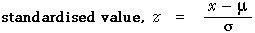

All normal distributions have basically the same shape
Different distributions from the normal family have different locations and spreads, but other aspects of their shape are the same.
Indeed, if the scales on the horizontal and vertical axes are suitably chosen, all normal distributions can be drawn identically.
The diagram below repeats an earlier diagram which showed the range of possible shapes for normal distributions.
The following diagram is similar, but the axes are rescaled when the parameters are adjusted.
Note that the shape of the curve remains the same for all values of the parameters.
All normal distributions can be scaled into a standard normal distribution
Since we can draw all normal probability density functions in the same way with suitable scaling of the axes, how can we define a common horizontal axis? The answer is found by standardising the normal values. If we define

then Z has the same distribution, for all values of the parameters µ and σ. Indeed, Z has a standard normal distribution with mean µ = 0.0 and standard deviation σ = 1.0.
The diagram below again allows the two normal parameters to be changed, but it includes a z-axis.
As the normal parameters are changed, the x-axis changes, but the z-axis remains the same.